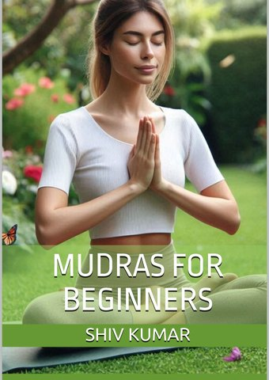

Mudras for Beginners
★★★★★
The essential collection of foundational yoga mudras — clearly illustrated, simply explained, and easy to start today. No prior experience needed.
"I got the book for my health and wellbeing. Read it within an hour. We as people should learn from other cultures. Knowledge is power."